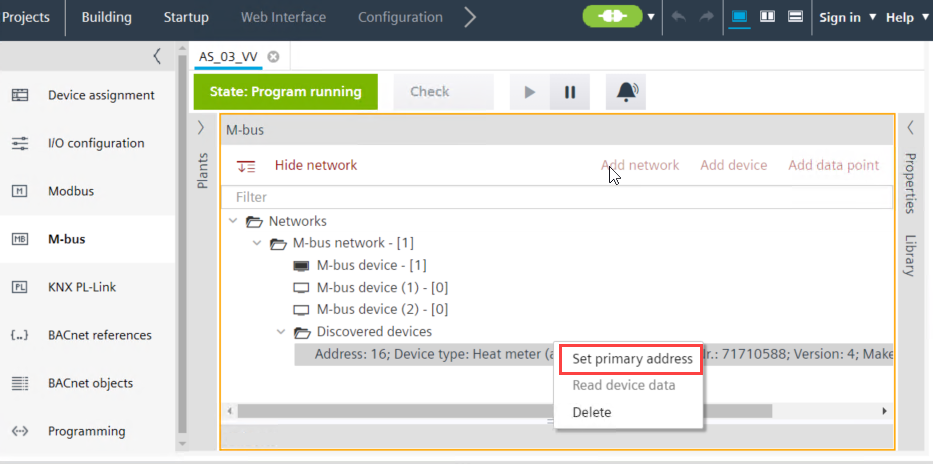
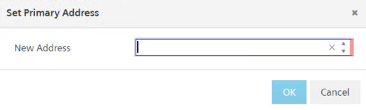

设置 M-bus 设备的主地址
您可以设置已发现的未分配的 M-bus 设备的主地址。设备本身也可以设置设备地址（例如通过其 display/dipswitches 或第三方工具）。
- Scan your M-bus network as described in section M-bus network scan.
- Go to Building > Building structure.
- Open the M-bus task.
- Expand the Discovered devices folder.
- Right-click the M-bus device details given below the Discovered devices folder.

- To delete the device from the list, click Delete.
Note: Deleting a device removes it from the discovery device list. Refer to the section M-bus network scan to recover it again. - To change the address of the device, click Set primary address
- A Set primary address window displays.

- Enter the device address in the New address field and click OK.
- After waiting a few seconds, the device address is updated and a
Command successfulmessage is displayed in the Log view.